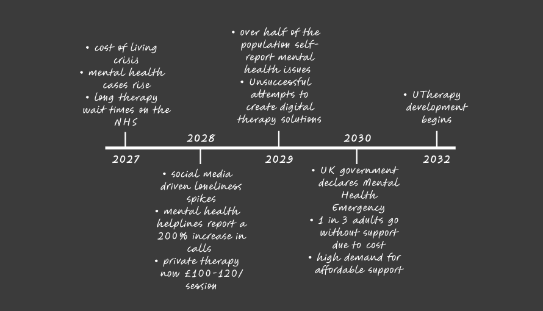
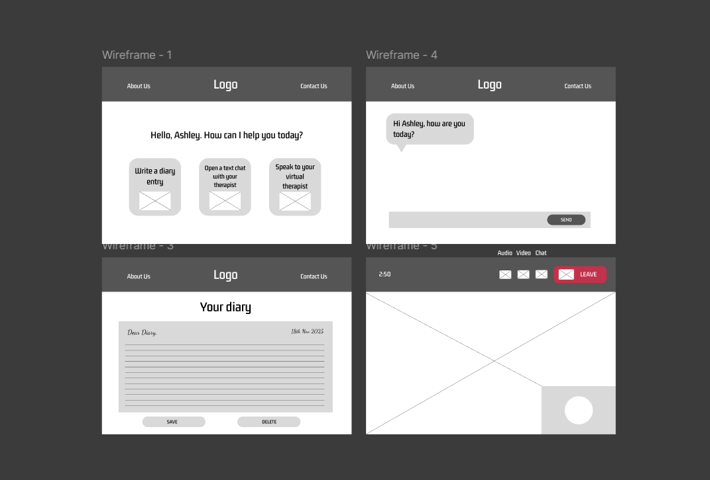
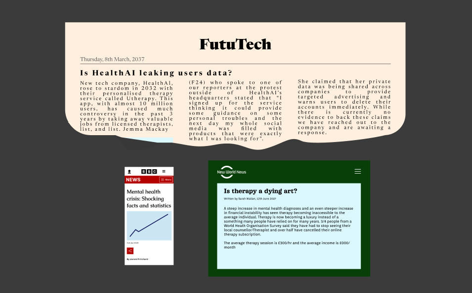

Utherapy: Making digital therapy feel personal
This project is a speculative piece for future company HealthAI, promoting their new digital therapy service, UTherapy.
UTherapy is a service that aims to achieve the company's goal of integrating Artificial Intelligence into everyday life
in the futuristic hybrid city of 2035-2045.
Role: Brand Identity, Information Architecture, Web Development
Tools: HTML, CSS, Javascript
Problem
Mental health is becoming an increasing concern with a need for accessible support, with many people many
people struggling to access support leading to further unresolved isssues. AI is making large advancements
and integrating into everyday life rapidly although it isn't fully accepted and can have detrimental environmental effects.
Solution
In this futuristic context AI is ethical, socially accepted, secure and empathetic with the capabilities for real-time multi-modal
interaction. HealthAI have paved the way with their new breakout service, UTherapy, to provide tailored advice and a unique experience
for everyone with each account being personalised upon creation.
Futuristic Design
One of the challenges of this project was creating a site that showed UTherapy's features but with no access to the 'HealthAI's patented hyper-realistic
empathetic language model'. I tried to combat this through establishing a rich context for the service where users could see why the product was useful
and necessary and also the timeline that led to its creation. The timeline features the years before the present day of the site, which is 2045. The initial
design for the timeline is shown below:

Full Redesign
Due to the previosly mentioned challenges a full design was implemented. The following wireframes document the vast changes in which the design was changed.
This was due to the lack of technical capabilities required to produce a website that could perform like a future service. I re-evaluated my requirements and
initial research to produce a promotional page on a company website, rather than focus on the service itself.

Minimalist Design
Current trends and research indicate the future of design is minimal interaction moving towards applications anticipating them and adapting to each user.
Therefore, the website design is simplistic and focuses on responsive design to adhere to any future screen.
Context-grounded Support
In order to support the main site and give further context to the future scenario in which the application is necessary, I created some future news clippings.
These aim to be taken lightly but also focus on bringing real details such as the BBC article being viewed on a mobile device due to their plans to stop all TV and radio broadcasting by 2030.

Reflection
- Speculative and experiential design encourages creatvity and deep though but can lead to many challenges
- It is vital to try not to be contrained by current pre-conceptions and technology, although it can be tricky
to fully implement this
- Design with an open-mind to adapt to the ever-changing digital environment